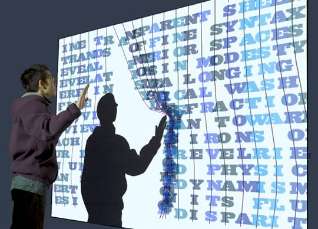

text.curtain 'text.curtain' explores relationships between poetic text and ludic play via an interactively evolving recombinant text. Projected on a wall-size screen, text.curtain presents a physics-based 'spring-mass' interface that organically responds to the interactions of multiple simultaneous users. As the piece is disrupted and letters wash back and forth, a granular synthesis engine provides realtime aural feedback. Tension is created through the simultaneous desire of users to both disrupt the existing text via 'play' and to 'read' the piece as it evolves and recombines in response.
|
 |
|
As a user approaches the piece they
are
presented with fourteen
lines. Depending on the version, either video motion-tracking (as below) or multiple
track-balls (as above,) measure users' interactions, allowing disruption of the letters and lines
via
movement. As the entropy (or disorder) of the system
increases and lines fragments and layer atop each another, readability is
increasingly obscured until a threshold is reached and a state change occurs,
with the existing text shifting up and away and a newly selected line appearing
at bottom. As the new line appears, the system settles into a stability once
again, affording a new reading of the ever-evolving text (there are
30-factorial or nearly 3^30 potential poems in the work, virtually guaranteeing
that none will repeat in a single day). |

©canazon